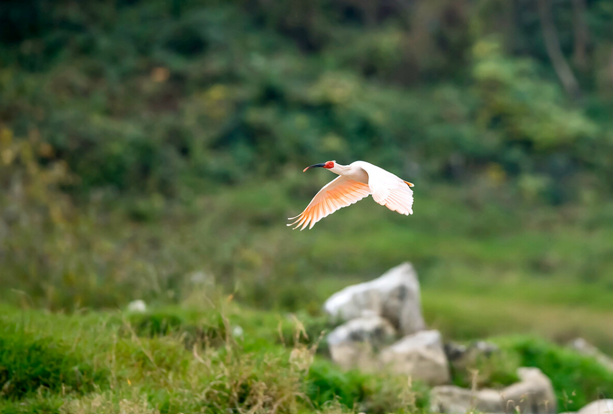
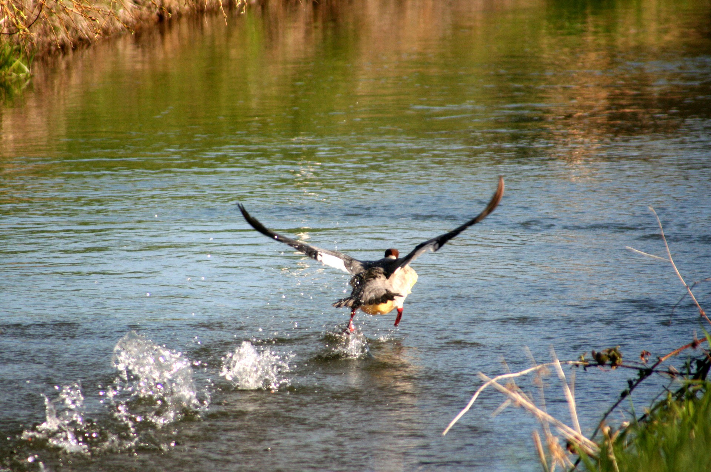
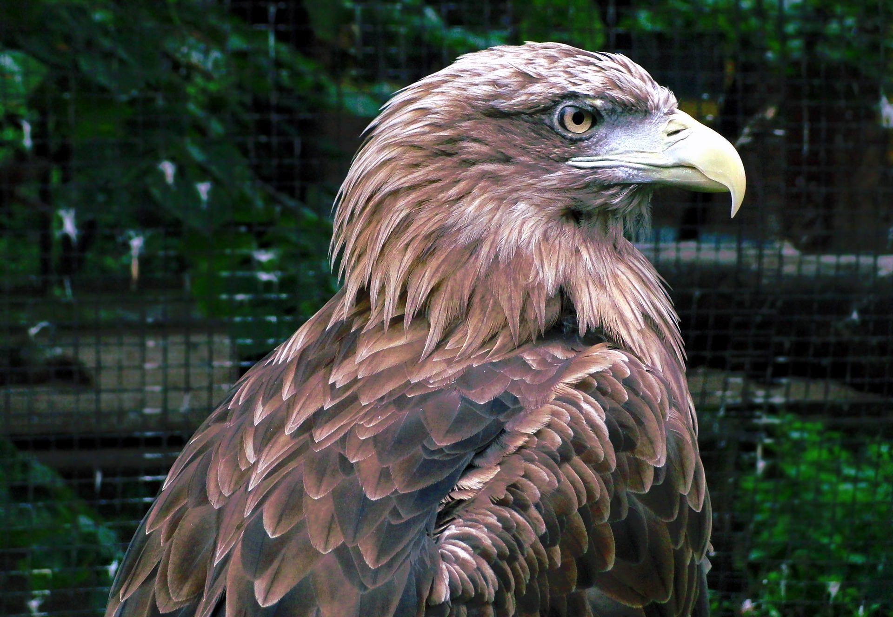
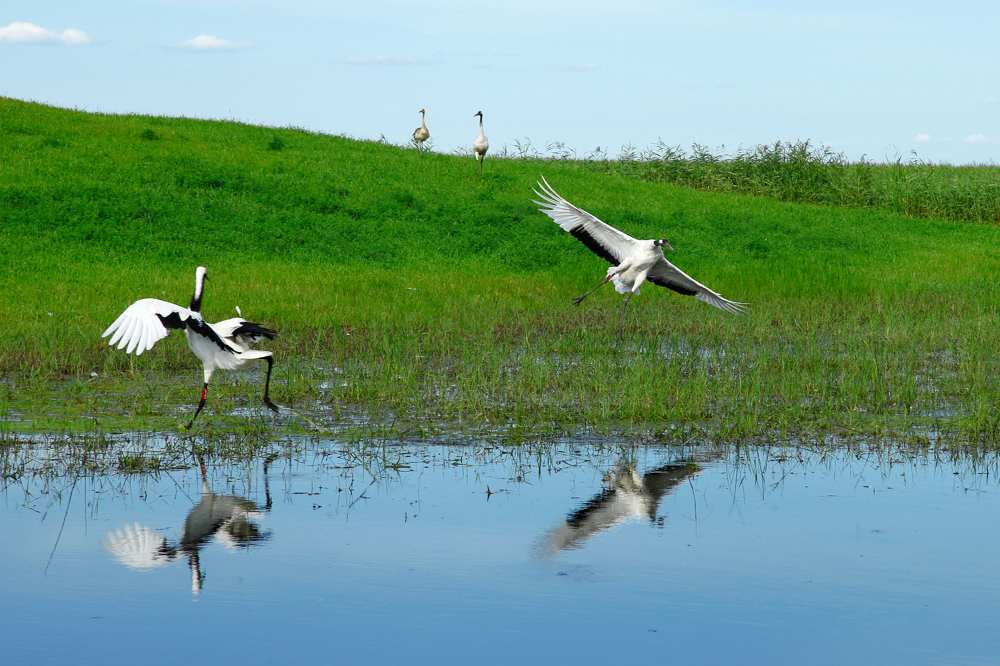

朱鹮
| 中文名 | 朱鹮 | 亚纲 | 今鸟亚纲 |
| 学名 | Nipponia nippon | 目 | 鹳形目 |
| 别称 | 亚洲朱鹮，日本朱鹮 | 科 | 鹮科 |
| 族 | 朱鹮 | 亚科 | 鹮亚科 |
| 界 | 动物界 | 属 | 朱鹮属 |
| 门 | 脊索动物门 | 亚种 | 无亚种 |
| 亚门 | 脊椎动物亚门 | 亚种 | 无亚种 |
| 纲 | 鸟纲 | ||
外形特征
朱非繁殖期通体白色，头、羽冠、背和两翅及尾缀有粉色。翅下和尾下亦缀有粉红色，飞翔时极明显可见。最侧飞羽几全暗褐色，仅基部的内外缘以及羽干白色。第枚内翈沿羽干中央部分以及羽端暗褐，第三枚仅先端沾一些暗褐色，其余飞羽全白色。头后枕部羽毛延长成状，形成松散的羽冠。繁殖期头、上背和颈缀有灰色，翅粉红色较浅淡，第1-5枚初级飞羽具灰褐色端斑。  成鸟全身羽色以白色为基调，但上下体的羽干以及飞羽沾淡淡的粉红色，尤以初级飞羽的粉红色较浓，头颈部羽毛特化伸长形成下垂的冠羽，整个面部，包括额部、周、眼睑和下嘴基部裸露无羽毛，且呈鲜艳的红色，喙尖端和下喙的基部红色其他部分黑色，虹膜金黄色，脚为鲜亮的红色。繁殖季节的成鸟在整个头部和颈部乃至部会分泌出黑色的小颗粒，将头颈肩部沾染成灰黑色，必须指出这种颜色的变化是由分泌物造成的而非羽毛本颜色的变化。虹膜橙红色，嘴黑色，嘴基及头裸露部分朱红色，跗蹠爪及胫下部裸露部分亦为朱红色。幼鸟两颊被有绒羽，余脸部裸露无羽，橙黄色。体羽缀有烟灰色而具玫瑰色泽。初级飞羽黑褐色，脚淡褐色，虹膜淡黄褐色。
中华秋沙鸭
| 中文名 | 中华秋沙鸭 | 目 | 雁形目 |
| 学名 | Mergussquamatus | 科 | 鸭科 |
| 别称 | 鳞肋秋沙鸭 | 亚科 | 秋沙鸭亚科 |
| 界 | 动物界 | 属 | 秋沙鸭属 |
| 门 | 脊索动物门 | 种 | 中华秋沙鸭 |
| 亚门 | 脊椎动物亚门 | 分布区域 | 西伯利亚、朝鲜、中国等地 |
| 纲 | 鸟纲 | 英文名称 | Scaly-sidedMerganser |
| 亚纲 | 今鸟亚纲 | 发现命名 | Gould,1864 |
中华秋沙鸭全长约49-63厘米。嘴长而窄，呈红色；鼻孔位于嘴峰中部，羽冠长而明显，成双冠状。雄鸟的头和上背及肩羽黑色；下背、腰和尾上覆羽白色，杂以黑色斑纹；尾灰色；大覆羽、三级飞羽和初级飞羽组成的翼镜白色；长而窄近红色的嘴，嘴形侧扁，前端尖出，其尖端具钩，与鸭科其它种类具有平扁的喙形不同。黑色的头部具厚实的羽冠。下体近白色，两胁羽片白色而羽缘及羽轴黑色形成特征性鳞状纹。脚红色。胸白而别于红胸秋沙鸭，体侧具鳞状纹有异于普通秋沙鸭。  雌鸟的头和颈棕褐色；上背褐色；下背、腰和尾上覆羽褐色逐渐变为灰色，并具白色横斑；尾黑褐色，沾灰色下体白色，肩和下体两侧具鳞状斑。色暗而多灰色，与胸秋沙鸭的区别在于体侧具同轴而灰色宽黑色窄的带状案。虹膜褐色；嘴桔黄色；脚桔黄色。两胁的羽毛上具有黑色鳞纹是这种秋沙鸭最醒目的特征所以早先的名字叫鳞胁秋沙鸭。后来，鸟类学家发现它的原产地是中国吉林省长白山地区，分布范围狭小，只零星个体偶尔飞到朝鲜和俄罗斯远东地区境内，所以才称它为中华秋沙鸭。此外，像凤头一样，脑后有两簇冠也是它的特有标志。
金雕
| 中文名 | 金雕 | 亚目 | 隼亚目 |
| 学名 | Aquila chrysaetos | 科 | 鹰科 |
| 别称 | 鹫雕、金鹫、黑翅雕 | 亚科 | 雕亚科 |
| 二名法 | A. chrysaetos | 属 | 真雕属 |
| 界 | 动物界 | 亚属 | 真雕属 |
| 门 | 脊索动物门 | 种 | 金雕 |
| 亚门 | 脊椎动物亚门 | 分布区域 | 北半球温带、亚寒带、寒带地区 |
| 纲 | 鸟纲 | 英文名称 | Golden Eagle |
| 目 | 隼形目 | ||
金雕属大型猛禽。全长76--102厘米，翼展达2.3米，体重2--6.5千克。头顶黑褐色，后头至后颈羽毛尖长，呈柳叶状，羽基暗赤褐色，羽端金黄色，具黑褐色羽干纹。上体暗褐色，肩部较淡，背肩部微缀紫色光泽；尾上覆羽淡褐色，尖端近黑褐色，尾羽灰褐色，具不规的暗灰褐色横斑或斑纹，和一宽阔的黑褐色端斑；上覆羽暗赤褐色，羽端较淡，为淡赤褐色，初级飞黑褐色，内侧初级飞羽内翈基部灰白色，缀杂乱的褐色横斑或斑纹；次级飞羽暗褐色，基部具灰白色纹，耳羽黑褐色。下体颏、喉和前颈黑褐色，羽基色；胸、腹亦为黑褐色，羽轴纹较淡，覆腿羽、尾覆羽和翅下覆羽及腋羽均为暗褐色，覆腿羽具赤色纹。幼鸟和成鸟大致相似，但体色更暗，第一年幼鸟尾羽白色，具宽的黑色端斑，飞羽内翈基部白色，在翼下形成白斑；第二年以后，尾部白色和翼下白斑均逐渐减少，尾下覆羽亦由棕褐色到赤褐色到暗赤褐色。 虹膜栗褐色，嘴端部黑色，基部蓝褐色或蓝灰色（雏鸟嘴铅灰色，嘴裂黄色），蜡膜和趾黄色，爪黑色。
丹顶鹤
| 中文名 | 丹顶鹤 | 目 | 今颚总目、鹤形目 |
| 学名 | Grus | 科 | 鹤科 |
| 别称 | 仙鹤 | 属 | 鹤属 |
| 界 | 动物界 | 种 | 丹顶鹤 |
| 门 | 脊索动物门 | 分布区域 | 松嫩平原、江苏射阳、朝鲜半岛、俄罗斯的远东和日本 |
| 亚门 | 脊椎动物亚门 | 英文名 | Red-crownedCrane |
| 纲 | 鸟纲 | 保护级别 | 中国国家一级保护动物 |
| 亚纲 | 今鸟亚纲 | ||
丹顶鹤具备鹤类的特征，即三长——嘴长、颈长、腿长。大型涉禽，全长约120厘米。体羽几乎全为纯白色。头顶裸出部分鲜红色；额和眼先微具黑羽；喉、颊和颈大部为暗褐色。次级和三级飞羽黑色，延长弯曲呈弓状。尾羽短、白色。嘴灰绿色，脚灰黑色。 成鸟除颈部和飞羽后端为黑色外，全身洁白，头顶肤露，呈鲜红色。传说中的剧毒鹤顶红（也有成顶血）正此处，但纯属谣传，鹤血是没有毒的，人所说的“鹤顶红其实是砒霜，即不纯的三氧化砷，鹤顶红是古时候对砒隐晦的说法。丹顶鹤的脂腺被粉（冉羽）。幼鸟体羽黄，喙黄色。亚成羽色黯淡，2岁后头顶裸区红色越发艳。